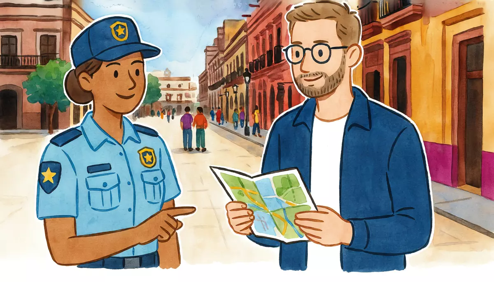

I can ask for and give directions using a map and landmarks.Goal of this lesson · CEFR Information exchange A2; Listening to announcements and instructions A2
Paso 1 de 8
EscuchaListen
Listen to the conversation, then answer the questions.

Saturday, 11:30 a.m. Alex comes out of the Zócalo metro station. He's meeting Diego at noon at the Casa de los Azulejos, a famous old building downtown, but he doesn't know the way. He asks a tourist police officer. usted (Alex and the police officer) · tú (Alex and Diego)
First listen without the text. Press Escuchar todo and answer the first question. Then show the Spanish text and listen again.
ChooseHow does Alex get to the Casa de los Azulejos?
Your answer:
A
AlexDisculpe, oficial, ¿cómo llego a la Casa de los Azulejos?Excuse me, officer, how do I get to the Casa de los Azulejos?
PT
Policía turísticaBuenos días. Mire, está muy cerca. ¿Ve esa calle con mucha gente? Es Madero, una calle peatonal.Good morning. Look, it's very close. See that street with lots of people? That's Madero, a pedestrian street.
A
Alex¿Esa? ¿La de los edificios antiguos?That one? The one with the old buildings?
PT
Policía turísticaEsa. Siga derecho por Madero hasta el final, hasta el Eje Central. Son como diez minutos a pie.That one. Go straight along Madero to the end, as far as the Eje Central. It's about ten minutes on foot.
A
Alex¿Todo derecho? ¿No hay que dar vuelta?Straight ahead all the way? I don't need to turn?
PT
Policía turísticaNo, todo derecho. En la última cuadra, a la izquierda, va a ver la Torre Latinoamericana. La Casa de los Azulejos está enfrente, a la derecha.No, straight ahead. In the last block, on your left, you'll see the Torre Latinoamericana. The Casa de los Azulejos is opposite, on the right.
A
Alex¿Y cómo es la casa?And what does the house look like?
PT
Policía turísticaEs un palacio antiguo, con azulejos azules y blancos. Adentro hay un restaurante.It's an old palace covered in blue and white tiles. There's a restaurant inside.
A
AlexPerfecto. Y después quiero ir a Bellas Artes. ¿Está lejos?Perfect. And afterwards I want to go to Bellas Artes. Is it far?
PT
Policía turísticaNo, está ahí nomás. Cruce el Eje Central y ahí está, a la derecha. Pero hay que cruzar con cuidado: hay muchos coches.No, it's just there. Cross the Eje Central and there it is, on the right. But you have to cross carefully: there are lots of cars.
A
Alex¿Y hay un mirador en la Torre Latinoamericana?And is there an observation deck in the Torre Latinoamericana?
PT
Policía turísticaSí, arriba, en los últimos pisos. Hay que comprar boleto, pero la vista es increíble.Yes, at the top, on the highest floors. You have to buy a ticket, but the view is amazing.
A
AlexMuchas gracias, oficial. Muy amable.Thank you very much, officer. That's very kind of you.
PT
Policía turísticaCon mucho gusto. ¡Que disfrute el centro!My pleasure. Enjoy the historic center!
1
ChooseListen again and answer.
Where is the Casa de los Azulejos?
Why does Alex have to be careful when he crosses the Eje Central?
What do you have to do to go up to the observation deck?
Escena 2: Diego is lost
12:05. Alex is waiting at the door of the Casa de los Azulejos. Diego phones him from the Allende metro station, at the corner of Tacuba and Bolívar. Listen and follow Alex's directions: which street, how many blocks, which way to turn.
D
Diego¿Bueno? Alex, ya estoy en el metro Allende. ¿Cómo llego?Hello? Alex, I'm at Allende metro station. How do I get there?
A
Alex¡Hola, Diego! Mira, es fácil. Toma la calle Bolívar y camina dos cuadras.Hi, Diego! Look, it's easy. Take Bolívar street and walk two blocks.
D
DiegoSale, Bolívar. ¿Y luego?OK, Bolívar. And then?
A
AlexEn la segunda calle, que es Madero, da vuelta a la derecha.At the second street, which is Madero, turn right.
D
Diego¿Madero, la peatonal?Madero, the pedestrian street?
A
AlexSí. Sigue derecho casi hasta el Eje Central. La casa está a la derecha, enfrente de la Torre Latinoamericana.Yes. Keep going straight almost to the Eje Central. The house is on the right, opposite the Torre Latinoamericana.
D
Diego¡Ah, ya sé cuál es! Llego en cinco minutos.Oh, I know which one it is! I'll be there in five minutes.
A
AlexAquí te espero, en la puerta.I'll wait for you here, at the door.
1
ChooseAnswer the questions: Escena 2: Diego is lost
How does Diego get from the metro to the Casa de los Azulejos?
Paso 2 de 8
FíjateNotice
Read how it works. Play the examples and repeat them aloud.
Directions with usted: siga, dé vuelta, cruce
yo form − o → -ar verbs: -e · -er/-ir verbs: -a
To tell someone you call usted what to do, use the usted command. Take the yo form of the present, drop the -o, and add the "opposite" vowel: -ar verbs take -e, -er and -ir verbs take -a: tomo → tome, sigo → siga, subo → suba. Watch the spelling in cruzo → cruce (z becomes c before e). Dar is irregular: dé, with an accent: dé vuelta a la derecha (turn right). With a friendly tone, it sounds helpful, not bossy.
infinitive
yo
usted
tomar
tomo
tome
caminar
camino
camine
mirar
miro
mire
cruzar
cruzo
cruce
seguir
sigo
siga
subir
subo
suba
dar (vuelta)
doy
dé (vuelta)
From the conversation:
Buenos días. Mire, está muy cerca. ¿Ve esa calle con mucha gente? Es Madero, una calle peatonal.Good morning. Look, it's very close. See that street with lots of people? That's Madero, a pedestrian street.
Esa. Siga derecho por Madero hasta el final, hasta el Eje Central. Son como diez minutos a pie.That one. Go straight along Madero to the end, as far as the Eje Central. It's about ten minutes on foot.
No, está ahí nomás. Cruce el Eje Central y ahí está, a la derecha. Pero hay que cruzar con cuidado: hay muchos coches.No, it's just there. Cross the Eje Central and there it is, on the right. But you have to cross carefully: there are lots of cars.
En la esquina, dé vuelta a la izquierda.At the corner, turn left.
Tome la segunda calle a la derecha.Take the second street on the right.
You already know some usted commands as set phrases: disculpe, oiga, pásele, and llegue diez minutos antes from the doctor's office (4.1).
With a friend: sigue, da vuelta, cruza
With tú, the command is even easier: it's the él / ella form of the present: toma, camina, cruza, sigue, da vuelta. So Diego toma el metro (Diego takes the metro) and Diego, toma el metro (Diego, take the metro) use the same verb; only the tone and the comma change.
infinitive
usted
tú
tomar
tome
toma
caminar
camine
camina
cruzar
cruce
cruza
seguir
siga
sigue
dar vuelta
dé vuelta
da vuelta
From the conversation:
¡Hola, Diego! Mira, es fácil. Toma la calle Bolívar y camina dos cuadras.Hi, Diego! Look, it's easy. Take Bolívar street and walk two blocks.
En la segunda calle, que es Madero, da vuelta a la derecha.At the second street, which is Madero, turn right.
Sí. Sigue derecho casi hasta el Eje Central. La casa está a la derecha, enfrente de la Torre Latinoamericana.Yes. Keep going straight almost to the Eje Central. The house is on the right, opposite the Torre Latinoamericana.
A few everyday verbs have short irregular tú commands, like ven (come) and sal (go out). You'll meet them later; for directions, toma, camina, sigue, cruza, da vuelta are all you need.
Ordinals: la primera, la segunda calle
Ordinal numbers agree with the noun: el segundo piso, la segunda calle. Primero and tercero drop the -o before a masculine noun: el primer piso, el tercer semáforo. Último, última = last. In directions you often hear just the ordinal: tome la segunda a la derecha (take the second street on the right).
masculine
feminine
1st
primero (el primer piso)
primera
2nd
segundo
segunda
3rd
tercero (el tercer piso)
tercera
4th
cuarto
cuarta
5th
quinto
quinta
last
último
última
From the conversation:
En la segunda calle, que es Madero, da vuelta a la derecha.At the second street, which is Madero, turn right.
No, todo derecho. En la última cuadra, a la izquierda, va a ver la Torre Latinoamericana. La Casa de los Azulejos está enfrente, a la derecha.No, straight ahead. In the last block, on your left, you'll see the Torre Latinoamericana. The Casa de los Azulejos is opposite, on the right.
la primera, la segunda, la tercera, la cuarta, la quinta callethe first, second, third, fourth, fifth street
In Mexico the floor at street level is la planta baja; el primer piso is the one above it.
Hay que + infinitivo: you have to
Hay que + infinitive says what is necessary in general, for anybody: hay que cruzar con cuidado (you have to cross carefully). It never changes form. Compare tener que (4.2), which says who: tengo que comprar un boleto (I have to buy a ticket). It's an Andamio structure.
From the conversation:
¿Todo derecho? ¿No hay que dar vuelta?Straight ahead all the way? I don't need to turn?
Sí, arriba, en los últimos pisos. Hay que comprar boleto, pero la vista es increíble.Yes, at the top, on the highest floors. You have to buy a ticket, but the view is amazing.
Paso 3 de 8
PracticaPractice
Do the exercises in order. They get freer as you go.
1
ChooseLook at the map. You're at the star (★), at the Zócalo. Where do the directions take you?
A simplified map of the Centro Histórico (north is up; not every street is shown). ★ = usted está aquí (you are here): the end of Madero, at the Zócalo.
«Siga derecho por Madero hasta el Eje Central. Está en la esquina, a la izquierda.»
«Siga derecho por Madero. Antes del Eje Central, está a la derecha, enfrente de la torre.»
«Siga derecho por Madero, cruce el Eje Central y ahí está, a la derecha.»
«Camine por Madero. En la calle Bolívar, dé vuelta a la derecha y camine dos cuadras. Está en la esquina con Tacuba.»
2
Type the missing wordsWrite the command.
Por favor, derecho por Madero. (seguir, usted)
Please go straight along Madero.
En la esquina, vuelta a la izquierda. (dar, usted)
At the corner, turn left.
Por favor, la avenida con cuidado. (cruzar, usted)
Please cross the avenue carefully.
Señora, la segunda calle a la derecha. (tomar, usted)
Ma'am, take the second street on the right.
Diego, derecho dos cuadras. (seguir, tú)
Diego, go straight ahead for two blocks.
Mariana, el Eje Central y da vuelta a la izquierda. (cruzar, tú)
Mariana, cross the Eje Central and turn left.
En el semáforo, vuelta a la derecha, Diego. (dar, tú)
At the traffic light, turn right, Diego.
3
Listen and chooseListen to the officer and follow the map. Where are you going?
A simplified map of the Centro Histórico (north is up; not every street is shown). ★ = usted está aquí (you are here): the end of Madero, at the Zócalo.
Where is she sending you?
Show what they say
Policía turística: Usted está en el Zócalo. Camine por Madero y, en la calle Bolívar, dé vuelta a la derecha. En la primera esquina, dé vuelta a la izquierda y siga derecho hasta el Eje Central. Ahí, enfrente, está.
Where is she sending you?
Show what they say
Policía turística: Usted está en el metro Allende. Camine por Bolívar dos cuadras. En Madero, dé vuelta a la izquierda y siga derecho hasta el final.
Where is she sending you?
Show what they say
Policía turística: Usted está en el Zócalo. Siga todo derecho por Madero. Es el último edificio a la izquierda, en la esquina. ¡Es muy alto!
4
ChooseChoose the right word.
Mi departamento está en el ___ piso. (3rd)
Tome la ___ calle a la izquierda. (1st)
La Casa de los Azulejos está en la ___ cuadra de Madero. (last)
El baño está en el ___ piso. (1st)
___ cruzar la avenida con cuidado. (in general)
5
Put the words in orderPut the words in order.
How do I get to Bellas Artes?
Go straight ahead to the Eje Central.
Take the second street on the right.
You have to cross carefully.
6
Say it in SpanishNow you. Say it in Spanish (or type it).
Ask a police officer how to get to the Zócalo.
Disculpe, ¿cómo llego al Zócalo?
a + el = al: al Zócalo.
Ask if it's far.
¿Está lejos?
Tell a stranger (usted) to go straight ahead to the end.
Siga derecho hasta el final.
Tell a stranger to turn left at the corner.
En la esquina, dé vuelta a la izquierda.
Tell a friend (tú) to take the second street on the right.
Toma la segunda calle a la derecha.
Tell a friend to cross the avenue and keep going straight.
Cruza la avenida y sigue derecho.
Say that you have to cross carefully (in general).
Hay que cruzar con cuidado.
7
Your own sentencesDirections for a tourist.
A simplified map of the Centro Histórico (north is up; not every street is shown). ★ = usted está aquí (you are here): the end of Madero, at the Zócalo.
Use the map. A tourist at the Allende metro station asks you how to get to the Torre Latinoamericana. Write 3–4 sentences with usted commands, one ordinal and one landmark.
Show a model answer
Camine por Bolívar dos cuadras. En la segunda calle, en Madero, dé vuelta a la derecha. Siga derecho hasta el Eje Central. La torre está en la esquina, a la izquierda: es muy alta.
Check your answer:
Paso 4 de 8
PalabrasWords
Listen to each word and repeat it. Then do the quick check.
Alex picks up this leaflet at a tourist information stand in the Zócalo.
Walking-tour leaflet
Paseo a pie: del Zócalo a Bellas Artes (1 km)
Salida: el Zócalo. Es una de las plazas más grandes del mundo. Al norte está la Catedral Metropolitana, y al este, el Palacio Nacional.
1. La calle Madero. Desde el Zócalo, camine por Madero, una calle peatonal llena de tiendas, cafés y músicos callejerosstreet musicians. Siga derecho unos diez minutos.
2. La Casa de los Azulejos. En la última cuadra de Madero, a la derecha. Es un palacio con una fachadafront (of a building) de azulejos de Puebla del siglo XVIII18th century. Hoy hay un restaurante adentro.
3. La Torre Latinoamericana. Enfrente, en la esquina con el Eje Central. Es de 1956 y tiene 44 pisos. Hay que comprar boleto para subir al mirador, pero la vista es increíble.
4. El Palacio de Bellas Artes. Cruce el Eje Central con cuidado: Bellas Artes está a la derecha, al lado de la Alameda Central. Adentro hay murales de Diego Rivera, José Clemente Orozco y David Alfaro Siqueiros. El museo cierra los lunes.
Consejotip: lleve agua y zapatos cómodos, y cuide su celular en las calles con mucha gente.
Words with a dotted underline have a translation: tap or hover.
1
ChooseAnswer the questions about the text.
Where is the Catedral Metropolitana?
What is special about the Casa de los Azulejos?
When can't you visit the Bellas Artes museum?
What does the leaflet tell you to bring?
Paso 6 de 8
CulturaCulture
Read about the culture behind the language.
The Centro Histórico: a grid with a story
Mexico City's Centro Histórico stands on top of Tenochtitlan, the capital of the Mexica (Aztecs). After the Spanish conquest in 1521, the new city was laid out as a grid of straight streets around the main square, the Zócalo (officially Plaza de la Constitución), with the Cathedral on its north side and the National Palace on its east side. Since 1987 the historic center, together with Xochimilco, has been a UNESCO World Heritage Site.
Many street names are history lessons: 5 de Mayo remembers the Mexican victory over the French army at Puebla on 5 May 1862; 16 de Septiembre is Independence Day; Madero is Francisco I. Madero, who started the Revolution of 1910. Madero has been a pedestrian street (calle peatonal) since 2010. At its west end stands the Torre Latinoamericana, opened in 1956: 44 floors, an observation deck at the top, and a structure that came through the strong earthquakes of 1957 and 1985.
Mexicans often give directions with landmarks more than street names: enfrente del Oxxo (the convenience store), donde está la iglesia, a dos cuadras del metro. Be ready for ahí nomás ("just over there"), which can mean two blocks or ten. A good habit: ask a second person to check. In the center you can also ask the policía turística, officers whose job is to help visitors.
Elsewhere: In Spain you'll hear gire a la derecha and coja la segunda calle (in Spain coger = to take; in Mexico, use tomar). In Argentina, people say doblá a la derecha (turn right).
Sources
UNESCO World Heritage List, Historic Centre of Mexico City and Xochimilco (inscribed 1987).
Torre Latinoamericana, official website, Historia (opened 1956; 44 floors; the 1957 and 1985 earthquakes).
Gobierno de la Ciudad de México, Autoridad del Centro Histórico: the Madero pedestrian corridor (2010).
1
ChooseCheck: what did you learn?
Someone says the museum is ahí nomás. What does that mean?
Paso 7 de 8
Tu turnoYour turn
Now use it: do the role play, then write.
Role play: Asking the way downtown
You're at the Zócalo with the map from the Practica step. You want to go to the Torre Latinoamericana and, after that, to a metro station. Ask a tourist police officer. Use usted.
You
Stop the officer politely and ask how to get to the Torre Latinoamericana.
Ask if it's far.
Repeat the key directions to check you understood.
Ask how to get from the tower to the Allende metro.
Thank her.
La policía turística
Gives directions with siga, dé vuelta, cruce.
Says how long it takes.
Confirms or corrects what you repeat.
Explains the way to the metro.
Says goodbye.
1. Listen to a model
One way the conversation could go. Listen, then try it yourself without looking.
A
AlexDisculpe, oficial. ¿Cómo llego a la Torre Latinoamericana?Excuse me, officer. How do I get to the Torre Latinoamericana?
PT
Policía turísticaSiga derecho por Madero hasta el Eje Central. La torre está en la esquina, a la izquierda.Go straight along Madero to the Eje Central. The tower is on the corner, on the left.
A
Alex¿Está lejos?Is it far?
PT
Policía turísticaNo, son como diez minutos a pie.No, it's about ten minutes on foot.
A
AlexEntonces, todo derecho por Madero, y la torre está a la izquierda, ¿verdad?So, straight along Madero, and the tower is on the left, right?
PT
Policía turísticaExacto.Exactly.
A
AlexY después, ¿cómo llego al metro Allende?And afterwards, how do I get to the Allende metro?
PT
Policía turísticaRegrese por Madero y, en Bolívar, dé vuelta a la izquierda. Camine dos cuadras: el metro está en la esquina con Tacuba.Go back along Madero and turn left at Bolívar. Walk two blocks: the metro is on the corner with Tacuba.
A
AlexRegreso por Madero, a la izquierda en Bolívar y dos cuadras. ¡Muchas gracias!Back along Madero, left on Bolívar and two blocks. Thank you very much!
PT
Policía turísticaDe nada. ¡Que le vaya bien!You're welcome. Have a good day!
2. Record yourself
Say your part aloud (pause the model after each of La policía turística's lines), or answer the questions in the role card. Then play it back and compare.
3. Practice with an AI partner (optional)
Copy this prompt into ChatGPT or Claude, switch on voice mode, and have the conversation. It plays La policía turística.
Stuck? Say «ayuda» and it gives you a hint in English, then carries on.
Finished? Say «terminamos» and it gives you feedback in English: what you did well, your mistakes, and useful phrases for next time.
Let's practice Spanish (Mexican Spanish, level A2). You are a tourist police officer, a woman of about 35, in the historic center of Mexico City. You are friendly and patient. Use "usted".
We are both at the Zócalo, at the east end of Madero, a pedestrian street that runs west to the Eje Central (a big avenue). Parallel to Madero, to the north: 5 de Mayo, then Tacuba; to the south: 16 de Septiembre. Bolívar crosses them halfway between the Zócalo and the Eje Central. The Casa de los Azulejos is on the north side of Madero, just before the Eje Central; the Torre Latinoamericana is opposite it, on the corner of Madero and the Eje Central (on the left if you walk from the Zócalo). Bellas Artes is across the Eje Central, on the right. The Allende metro station is on the corner of Tacuba and Bolívar. The Cathedral is on the north side of the Zócalo.
Rules:
- Speak only Spanish, short turns (1-2 sentences), simple language for an A2 learner.
- Give me directions with usted commands (siga, dé vuelta, cruce, tome, camine), ordinals (la primera, la segunda calle) and landmarks, in short sentences. If I repeat the directions, confirm or correct them. Answer if I ask how long it takes.
- You play only this one person. Never speak as anyone else, and don't describe what other people say or do.
- If I make a mistake, don't stop me: repeat what I said correctly in your answer (for example: if I say "¿Doy vuelta en la segundo calle?", you say "Sí, dé vuelta en la segunda calle.").
- After the first directions, tell me that to go up to the tower's observation deck I have to buy a ticket ("hay que comprar boleto"), and ask if I also want directions to Bellas Artes.
- When I say "ayuda", step out of the role play for a moment: in English, give me a short hint about what I could say next, with one or two short Spanish options, then continue the role play where we were.
- When I say "terminamos", stop the role play and give me feedback in English: 3 things I did well, up to 3 mistakes with corrections, and 3 useful phrases for next time.
Start now: say "Buenos días. ¿Le puedo ayudar?"
Writing: Directions to your home
A friend is visiting you for the first time on Saturday. Write a message with directions from the nearest metro or bus stop to your door: tú commands, an ordinal, landmarks, and one thing they have to do (hay que…).
60–100 words.
Show a model answer
¡Hola, Mariana! Para llegar a mi casa, toma la línea 3 del metro hasta Etiopía. En la estación, sube a la calle y camina derecho tres cuadras. En la esquina hay una farmacia: ahí da vuelta a la derecha. Mi casa es la segunda a la izquierda, en el número setenta y cuatro. Es la casa rosa, al lado de una papelería y enfrente de una iglesia. Hay que tocar el timbredoorbell del interior dos. ¡Te espero el sábado a las dos!
Check your text:
Paso 8 de 8
¿Lo logré?Did I do it?
Check yourself against the goal of the lesson.
Read each statement and be honest: anything marked casi or todavía no goes into Repaso so it comes back soon.
I can ask how to get somewhere and if it's far.
I can understand directions with siga, dé vuelta, cruce, tome.
I can give directions to a friend with sigue, da vuelta, cruza, toma.
I can use ordinals and landmarks: la segunda calle, enfrente de la torre.